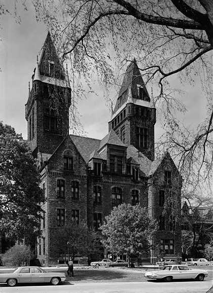

Institutionalization: A Forgotten History
This site is dedicated to the idea that the mass institutionalization of the disabled -- to include the physically disabled, mentally disabled, and mentally ill -- represents an important and chapter in American history and one that most Americans are not familiar with. The first asylums in the United States were founded in the nineteenth century. First asylums for the mentally ill, often known as lunatic asylums or hospitals for the insane, and later followed by institutions for the mentally disabled and epileptics -- often known as colonies or schools for the feeble-minded. By the late nineteenth century these institutions began to grow rapidly and their goals shifted from treatment to permanent custodial placement. By mid-1930s, institutions across the country housed over 400,000 individuals1. Very few of these individuals had engaged in any kind of violent crime and, yet, that does not mean that they were not seen as threatening. Seen as "undesirable citizens", if allowed to freely live in communities they represented a threat to the republic as this 1914 University of Texas report explains:
The latter class comes in conflict with law and is generally considered a menace to good government. Scientific study and research today show us that this class is composed of two groups, the delinquent and criminal, or, properly speaking, the undesirable citizen, the class that has ideas and performs actions that are inimical to social health; and a second group composed of the mental and moral defectives and the defective-delinquent, the socially unfit through deprivation of desirable qualities and by inheritance of undesirable ones, from defective strains, and diseases.2
Institutions, then, contained this undesirable element, and while these institutions are largely a thing of the past, the idea that the disabled represent a threat or burden persists within the culture. How might our ideas about asylums or institutions relate to these depictions?
Collective memory
What ideas Americans do have about the history of these institutions probably comes from the the idea of asylums or hospitals for the criminally insane -- often used in horror films, television, and comics as a place to confine psychotic criminals. While it would be easy to dismiss these ghost stories as simply sensationalistic pulp, I believe we could benefit by taking them seriously. Whether you are a fan of this genre or not, the idea that asylums are creepy places that house dangerous mental patients is so persistent that it seems obvious that it represents some real shared feelings of hostility toward the mentally ill. At the same time, it is interesting that other groups that have historically been institutionalized are not depicted as vicious -- in fact often they are not depicted at all. Why the history of these groups of disabled has been forgotten and is absent from our culture also deserves a closer examination.
Historical Investigation
Another goal of this site is to begin to teach skills of historical investigation. As a first year Ph.D student in history, I am in the process of acquiring these skills myself -- learning not only about the past but also how to find and critically evaluate historical evidence. To provide an idea about what these skills are I will create an exhibit concerning the Danvers State Hospital for the insane which is also happens to the be basis for one of pop culture's most famous mental institutions: the Arkham Asylum of the Batman comics series. Within this exhibit, I will also explain my where I found my evidence and how I interpret it. After viewing my exhibit, I encourage you to conduct your own interpreting some of sources I have found or finding your own (More on my teaching rationale can be found here). You will probably not be making a groundbreaking historical argument -- but neither am I. What you will learn hopefully is a greater understanding of disability history in the United States and an appreciation for the investigative and interpretive skills of the historian.
1. Mental Patients in State Hospitals: Statistics of Admissions, Discharges, and Deaths During the Year and of Patients Under Care at Beginning of Year in State Hospitals for Mental Disease Government Printing Office. 1933 101. http://books.google.com/books?id=HP4fYFSDcl4C&hl http://books.google.com/books?id=G7tBAAAAYAAJ]↩ 2. C. S. Yoakum, Care of the Feeble-minded and Insane in Texas University of Texas. 1914. 11. http://books.google.com/books?id=G7tBAAAAYAAJ.↩